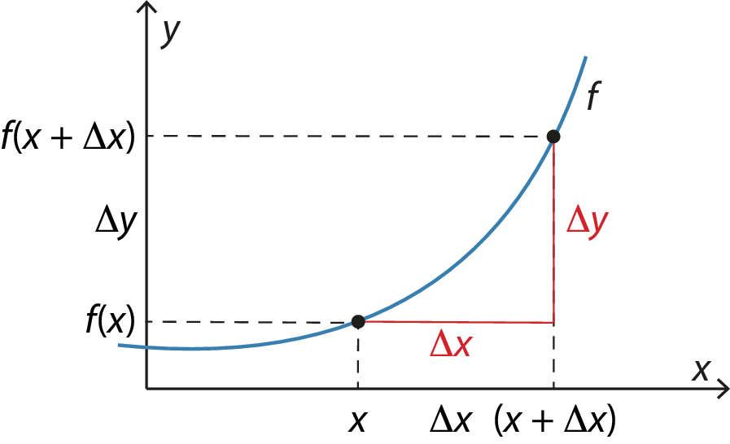
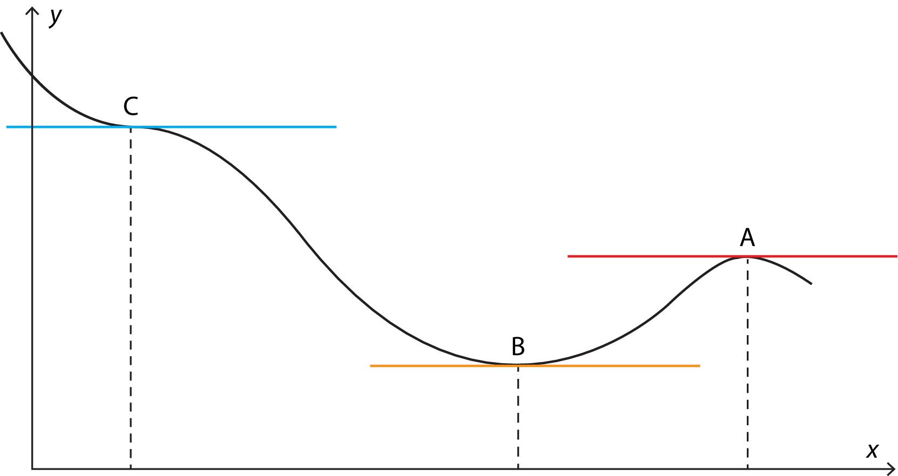
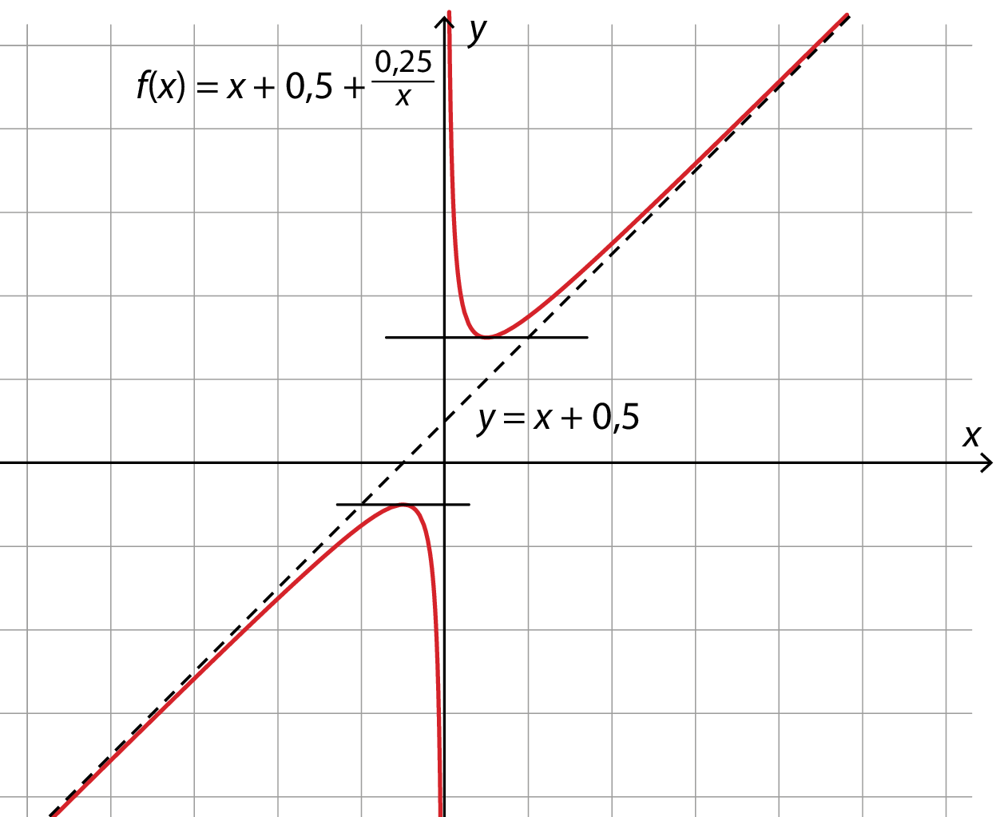

Differentialregning for let øvede
Matematik
Grænseværdier
Arealet af en cirkel?
\[A=\pi \cdot r^2\]
Approksimeret som trekanter
Arealet af en trekant
\[A = \frac{1}{2} \cdot a \cdot b \cdot \sin \left( C \right)\]
Arealet af 8 trekanter \[A = 8 \cdot \frac{1}{2} \cdot r^2 \cdot \sin \left( \frac{2 \pi}{8} \right)\]
Approksimeret som trekanter
Eller 16 trekanter \[A = 16 \cdot \frac{1}{2} \cdot r^2 \cdot \sin \left( \frac{2 \pi}{16} \right)\]
Approksimeret som trekanter
Eller \(n\) trekanter \[A = n \cdot \frac{1}{2} \cdot r^2 \cdot \sin \left( \frac{2 \pi}{n} \right)\]
Hvad sker der, når \(n \to \infty\)?
\[\boxed{A = \lim_{n\to \infty} \left(n \cdot \frac{1}{2} \cdot r^2 \cdot \sin \left( \frac{2 \pi}{n} \right)\right)}\]
Was bedeutet das?
\[\boxed{A = \lim_{n\to \infty} \left(n \cdot \frac{1}{2} \cdot r^2 \cdot \sin \left( \frac{2 \pi}{n} \right)\right)}\]
- \(\lim\) betyder grænse. Fra latin limes. (Engelsk limit).
- \(n \to \infty\) udtales "n" går mod uendeligt.
- \(\lim_{n \to \infty}\) udtales: "grænseværdien når n går mod uendeligt".
Regneregler for grænseværdier
Opgaver
Bestem følgende grænseværdier
- \(\lim_{x \to a} 4 =\)
- \(\lim_{x \to 12} x+1 =\)
- \(\lim_{x \to -1} \frac{x+1}{x} =\)
- \(\lim_{x \to 0^+} \frac{x+1}{x} =\)
- \(\lim_{x \to -\infty} \frac{x+1}{x} =\)
- \(\lim_{x \to 2} \frac{x^3 -8}{2 x^2-x-6}=\)
- \(\lim_{x \to 1^+} \frac{x^3 -x}{x^{-1}-1}=\)
- \(\lim_{x \to \pi} \cos \left( x \right)=\)
- \(\lim_{x \to \pi} \cos \left( x -\pi\right)=\)
- \(\lim_{x \to \pi} \cos \left( x +\sin(x)\right)=\)
- \(\lim_{x \to \pi} \cos \left( x \cdot \cos(x)\right)=\)
Tilbage til cirklen
\[\boxed{A = \lim_{n\to \infty} \left(n \cdot \frac{1}{2} \cdot r^2 \cdot \sin \left( \frac{2 \pi}{n} \right)\right)}\]
Tilbage til cirklen
\[A = \lim_{n\to \infty} \left(n \cdot \frac{1}{2} \cdot r^2 \cdot \sin \left( \frac{2 \pi}{n} \right)\right)\]
\(\frac{1}{2}\) og \(r^2\) er ikke afhængig af \(n\)
\[A = \frac{1}{2}\cdot r^2 \lim_{n\to \infty} \left(n \cdot \sin \left( \frac{2 \pi}{n} \right)\right)\]
Nu mangler vi blot at vise, at den viste grænseværdi er lig \(2 \pi\).
Naivt forsøg
\begin{align*} \lim_{n \to \infty} \left( n \cdot \sin \left( \frac{2 \pi}{n} \right)\right) &= \lim_{n \to \infty} \left( n \right)\cdot \lim_{n \to \infty} \left( \sin \left( \frac{2\pi}{n} \right) \right) \\ &= \infty \cdot 0 \end{align*}Hmm… Vi må prøve noget andet
Noget andet
\[\lim_{n \to \infty} \left( n \cdot \sin \left( \frac{2 \pi}{n} \right) \right)\]
Argumentet til sinus er jo bare en vinkel
\[\phi = \frac{2 \pi}{n}\]
og af dette fås
\[n = \frac{2 \pi}{\phi}\]
Det kan jo indsættes i stedet for…
\[\lim_{n \to \infty} \left( \frac{2 \pi}{\phi} \cdot \sin \left(\phi \right) \right)\]
Men hov… Hvad med grænseværdien? Der er jo ikke noget \(n\) længere.
\[\lim_{n \to \infty} \left( \phi \right) = \lim_{n \to \infty} \left( \frac{2 \pi}{n} \right) = 0\]
Ahh, i stedet for \(\lim_{n \to \infty}\) skrives \(\lim_{\phi \to 0}\)
\[\lim_{n \to \infty} \left( n \cdot \sin \left( \frac{2 \pi}{n} \right) \right) = \lim_{\phi \to 0} \left( \frac{2 \pi}{\phi} \cdot \sin \left( \phi \right) \right)\]
Noget andet
\[\lim_{\phi \to 0} \left( \frac{2 \pi}{\phi}\cdot \sin \left( \phi \right) \right) = 2 \pi \cdot \lim_{\phi \to 0} \left( \frac{\sin \left( \phi \right)}{\phi} \right)\]
Vi skal altså nu "bare" vise at \(\lim_{\phi \to 0} \left( \frac{\sin \left( \phi \right)}{\phi} \right) = 1\)
TRYLLE, TRYLLE, TRYLLE
tex(float('limit(sin(x)/x,x,0)=limit(sin(x)/x,x,0)));
\[\lim_{x\rightarrow 0.0}{{{\sin x}\over{x}}}=1.0\]
Brug af CAS-værktøj (Maxima)
TRYLLE, TRYLLE, TRYLLE
Nej ikke flere tryllerier i denne omgang.
Vi må undersøge grænseværdien på en anden måde.
Vi kan bruge L'Hôpitals regler.
L'Hôpitals regler
"0/0"-reglen
Det antages at \(\lim_{x \to a} \left( f(x) \right) = \lim_{x \to a} \left( g(x) \right) = 0\) og at grænseværdien \[\lim_{x \to a} \frac{f'(x)}{g'(x)}\] eksisterer. Da gælder \[\boxed{\lim_{x \to a} \left( \frac{f(x)}{g(x)} \right)=\lim_{x \to a} \left( \frac{f'(x)}{g'(x)} \right)}\]
"\(\infty/\infty\)"-reglen
Det antages at \(\lim_{x \to a} \left( f(x) \right) = \lim_{x \to a} \left( g(x) \right) = \pm\infty\) og at grænseværdien \[\lim_{x \to a} \frac{f'(x)}{g'(x)}\] eksisterer. Da gælder \[\boxed{\lim_{x \to a} \left( \frac{f(x)}{g(x)} \right)=\lim_{x \to a} \left( \frac{f'(x)}{g'(x)} \right)}\]
Opgaver
Brug L'Hôpitals regler til at bestemme følgende grænseværdier:
- \(\lim_{x \to 0} \left( \frac{\sin \left( 2 x \right)}{x} \right)\)
- \(\lim_{x \to \frac{\pi}{2}} \left( \frac{\cos \left( x \right)}{\frac{\pi}{2}-x} \right)\)
- \(\lim_{x \to 0} \left( \frac{e^x-1}{x} \right)\)
- \(\lim_{x\to \infty} \left( \frac{x^2+x}{3 x^2+2} \right)\)
- \(\lim_{x \to 1}\left( \frac{\ln \left( x \right)}{\sin \left( x-1 \right)} \right)\)
- \(\lim_{x \to 0} \left( \frac{1 - \cos \left( x \right)}{x^3} \right)\)
Noget andet… igen
\[\lim_{\phi \to 0} \left( \frac{2 \pi}{\phi}\cdot \sin \left( \phi \right) \right) = 2 \pi \cdot \lim_{\phi \to 0} \left( \frac{\sin \left( \phi \right)}{\phi} \right)\]
Lad os bare se nærmere på grænseværdien. Den skal bare give 1, så er vi glade…
\[\lim_{\phi \to 0} \left( \frac{\sin \left( \phi \right)}{\phi} \right) = \frac{\lim_{\phi \to 0}\left( \sin \left( \phi \right) \right)}{\lim_{\phi \to 0}\left( \phi \right)} = \frac{0}{0}\]
Vi kan altså bruge L'Hôpitals 0/0-regel
\[\frac{\lim_{\phi \to 0}\left( \sin \left( \phi \right) \right)}{\lim_{\phi \to 0}\left( \phi \right)} = \frac{\lim_{\phi \to 0}\left( \frac{d}{d \phi} \left(\sin \left( \phi \right)\right) \right)}{\lim_{\phi \to 0}\left( \frac{d}{d \phi} \left(\phi\right) \right)} = \frac{\lim_{\phi \to 0}\left( \cos \left( \phi \right) \right)}{\lim_{\phi \to 0}\left( 1 \right)} = \frac{1}{1} = 1\]
HURRA, det virker… Men det er også lidt snyd. Vi kan jo i princippet ikke differentiere endnu…
Noget andet andet
Vi må hellere tage et geometrisk/trigonometrisk bevis i stedet for…
Tadaa! - Khan academy to the rescue
Endelig - arealet af en cirkel
\[A = \lim_{n \to \infty} \left( n \cdot \frac{1}{2}\cdot r^2 \cdot \sin \left( \frac{2 \pi}{n} \right) \right)\]
\[A = \frac{1}{2}\cdot r^2 \cdot \lim_{n \to \infty} \left( n \cdot \sin \left( \frac{2 \pi}{n} \right) \right)\]
\[A=\frac{1}{2}\cdot r^2 \cdot \lim_{\phi \to 0} \left( \frac{2 \pi}{\phi}\cdot \sin \left( \phi \right) \right)\quad for \quad \phi = \frac{2 \pi}{n}\]
\[A = \frac{1}{2}\cdot r^2 \cdot 2 \pi \cdot \lim_{\phi \to 0} \left( \frac{\sin \left( \phi \right)}{\phi} \right)\]
\[ A = \frac{1}{2}\cdot r^2\cdot 2 \pi \cdot 1\]
\[\boxed{A = \pi \cdot r^2}\]
Kontinuitet
Kontinuitet
Sætning 9.1
En funktion \(f(x)\) siges at være kontinuert i punktet \((a, f(a))\), når følgende grænseværdier er ens:
\[\lim_{x \to a^-} \left( f(x) \right) = \lim_{x \to a^+} \left( f(x) \right) = f(a)\]
En funktion siges at være kontinuert i hele dens definitionsmængde \(Dm(f)\), såfremt ovenstående gælder for alle \(a \in Dm(f)\).
- \(\lim_{x \to a^-}\) betyder at x nærmer sig a fra venstre side.
- \(\lim_{x \to a^+}\) betyder at x nærmer sig a fra højre side.
Eksempler
Eksempel 1
Vi har følgende gaffelfunktion \[f(x)= \begin{cases} \sqrt{x} & \text{for } 0 \leq x \leq 9 \\ 2x - 15 & \text{for } x > 9 \end{cases}\] Vi skal tjekke om den er kontinuert.
\(\lim_{x \to 9^-} \left( f(x) \right) = \lim_{x \to 9^-} \left( \sqrt{x} \right) = \sqrt{9} = 3\)
\(\lim_{x \to 9^+} \left( f(x) \right) = \lim_{x \to 9^+} \left( 2 \cdot x - 15 \right) =2 \cdot 9 - 15 = 3\)
Yes, den er kontinuert.
Eksempel 2
Nu har vi funktionen \[f(x) = \frac{1}{x}\]
Er den kontinuert?
Vi skal være særligt opmærksomme omkring \(x=0\) (da man ikke må dele med nul).
Vi tjekker da
\[\lim_{x \to 0^-} \left( \frac{1}{x} \right) = - \infty\]
\[\lim_{x \to 0^+} \left( \frac{1}{x} \right) = \infty\]
Nej, funktionen er ikke kontinuert i \(x=0\). (For alle andre værdier af x er den).
Opgaver
Opgave 1
I har givet funktionen \(f(x)=\frac{6}{x-3}\).
- Undersøg, om funktionen er kontinuert for alle værdier af \(x\).
Opgave 2
I har givet gaffelfunktionen
\[g(x)= \begin{cases} x^2+2 & \text{for } x \geq 2 \\ -x^2-2 & \text{for } x < 2 \end{cases}\]
- Undersøg, om funktionen er kontinuert for alle værdier af \(x\).
Opgave 3
Undersøg, om følgende funktioner er kontinuerte:
\begin{align*} f(x) &= \frac{x^3-1}{2} \\ g(x) &= \frac{1}{x-1} \\ h(x) &= 2^x-3^x \\ i(x) &= \frac{\sin \left( x \right)}{\sin \left( x \right)+1} \\ j(x) &= x \cdot \cos \left( x \right) \end{align*}Sekanter og differenskvotienter
Sekant
En sekant er en ret linje, der skærer en kurve i to punkter.
Sekant
- Hvordan finder man hældningen for sekanten?
- \(a = \frac{y_2-y_1}{x_2-x_1}\)
- Eller
- \(a = \frac{f(x_2)-f(x_1)}{x_2-x_1}\)
- Men hvad er egentlig forskellen på \(x_2\) og \(x_1\)?
- \(x_2 = x_1 + \Delta x \to x_2-x_1 = \Delta x\)
- sekantens hældning kan altså skrives som
- \(a = \frac{\Delta y}{\Delta x} = \frac{f(x_1 + \Delta x) - f(x_1)}{\Delta x}\)
- For et vilkårligt \(x\) på funktionen bliver det til
Differenskvotienten
Differenskvotienten er en sekants hældning. \[\boxed{\frac{\Delta y}{\Delta x} = \frac{f(x+\Delta x) - f(x)}{\Delta x}}\]
Differenskvotienten er også gennemsnitshældningen for grafen mellem to punkter.
Tangenter og differentialkvotienter
Fra differens til differential
- Hvad sker der, når afstanden mellem sekantens to punkter bliver meget lille?
- Lad mig demonstrere.
- Sekanten bliver til en tangent.
- Differenskvotienten bliver til differentialkvotienten.

Differentialkvotient
Matematisk skrives differentialkvotienten på følgende måde: \[\frac{d f}{dx} = \lim_{\Delta x \to 0} \left( \frac{f(x+\Delta x) - f(x)}{\Delta x} \right)\]
- Hvis denne grænseværdi eksisterer for alle x-værdier i definitionsmængden, siges det, at funktionen \(f\) er differentiabel, og man har bestemt differentialkvotienten, også kaldet den afledte funktion for \(f\).
- Vi skrives typisk \(\frac{df}{dx}\) eller \(f'(x)\) som symboler for differentialkvotient/afledt funktion.
Tretrinsreglen
For at bestemme differentialkvotienter benyttes typisk tre trin.
Trin 1
Bestem funktionstilvæksten \(\Delta y = \Delta f = f(x+\Delta x) - f(x)\), og opstil differenkvotienten.
\[\frac{\Delta f}{\Delta x} = \frac{f(x+\Delta x)-f(x)}{\Delta x}\]
Differenskvotienten er dermed identisk med hældningen af sekanten mellem punkterne \((x, f(x))\) og \((x+\Delta x, f(x+\Delta x))\).

Trin 2
Omskriv differenskvotienten, således at trin 3 bliver lettere at gennemføre.
Trin 3
Bestem grænseværdien for differenskvotienten når \(\Delta x \to 0\).
\begin{align*} f'(x) &= \frac{d f}{dx} = \lim_{\Delta x \to 0} \left( \frac{\Delta f}{\Delta x} \right)\\ &= \lim_{\Delta x \to 0} \left( \frac{f(x+\Delta x) - f(x)}{\Delta x} \right) \end{align*}Hvis denne grænseværdi eksistere for alle \(x\) i difinitionsmængden er funktionen generelt differentiabel. Hvis grænseværdien kun eksistere i udvalgte punkter, er funktionen ikke generelt differentiabel, men kun differentiabel i disse punkter.
Eksempel
Lad os bestemme \(\frac{df}{dx}\) for et vilkårlig \(x\) for \(f(x)=-x^2+2\).
Trin 1
Differenskvotient
\begin{align*} \frac{df}{dx} &= \frac{f(x+\Delta x) - f(x)}{\Delta x} \\ &= \frac{-(x+\Delta x)^2 +2 - \left( -x^2 + 2 \right)}{\Delta x} \end{align*}Trin 2
Omskriv differenskvotienten så meget som muligt
\begin{align*} \frac{\Delta f}{\Delta x} &= \frac{f(x+\Delta x) - f(x)}{\Delta x} \\ &= \frac{-(x+\Delta x)^2 +2 - \left( -x^2 + 2 \right)}{\Delta x} \\ &= \frac{- x^2 - \Delta x^2 - 2 x \Delta x + 2 +x^2 -2}{\Delta x} \\ &= \frac{- \Delta x^2 - 2 x \Delta x}{\Delta x} \\ &= - \Delta x - 2 x \\ \end{align*}Trin 3
Bestem grænseværdien
\begin{align*} f'(x) &= \frac{df}{dx} \\ &= \lim_{\Delta x \to 0} \left( \frac{\Delta f}{\Delta x} \right)\\ &= \lim_{\Delta x \to 0} \left( - \Delta x - 2 x \right)\\ &= -2 x \end{align*}Opgaver
Opgave 1
Bestem differentialkvotienten for \[f(x)=3 x^2\] ved hjælp af tretrinsreglen.
Opgave 2
Bestem differentialkvotienten for \[f(x)=\frac{1}{x}\] ved hjælp af tretrinsreglen.
Opgave 3
Bestem differentialkvotienten for \[f(x)=\sqrt{x}\] ved hjælp af tretrinsreglen.
(Hint: Når I har skrevet differenskvotienten op, skal I på et tidspunkt i trin 2 gange med det "smarte" et-tal, \(1=\frac{\sqrt{x+\Delta x}+\sqrt{x}}{\sqrt{x+\Delta x}+\sqrt{x}}\)).
Beviser for regneregler
Differentiation af konstant
For \(f(x)= a\), hvor \(a\) er en konstant gælder at \[\boxed{f'(x) = 0}\]
(Hint: Opskriv differenskvotienten og se at den giver nul, og dermed på differentialkvotienten også være nul.)
Differentiation af led
For \(f(x) = g(x) \pm h(x)\) gælder at \[\boxed{f'(x) = g'(x) \pm h'(x)}\] Man kan altså differentiere hvert led for sig.
(Hint: Skriv differentialkvotienten op for \(f(x)\) vha tretrinsreglen, flyt rundt på leddene og anvend regnereglerne for grænseværdier.)
Konstant gange funktion
For \(f(x) = k \cdot g(x)\) gælder at \[\boxed{f'(x) = k \cdot g'(x)}\]
(Hint: Skriv differentialkvotienten op for \(f(x)\) vha tretrinsreglen, sæt noget uden for parentes og anvend regnereglerne for grænseværdier.)
Produkt og kvotient
Produktreglen
For \(f(x)= g(x)\cdot h(x)\) gælder at \[\boxed{f'(x) = g'(x) \cdot h(x) + g(x) \cdot h'(x)}\]
Det ene makkerpar skal bevise dette.
(Hint: Indsæt et "smart" nul \(0=h(x+\Delta x)\cdot g(x) - h(x + \Delta x) \cdot g(x)\) i tælleren i differenskvotienten.)
Kvotientreglen (brøk)
For \(f(x)= \frac{g(x)}{h(x)}\) gælder at \[\boxed{f'(x) = \frac{g'(x) \cdot h(x) - g(x) \cdot h'(x)}{(h(x))^2}}\]
Det andet makkerpar skal bevise dette.
(Hint: Opskriv først differenskvotienten på vanlig vis. Find fællesnævner. Indsæt det "smarte" nul \(0=g(x)\cdot h(x) - g(x)\cdot h(x)\).)
Opgaver

Kædereglen
Differentiation af sammensatte funktioner.
For \(f(x) = g(h(x))\) gælder at \[\boxed{f'(x) = g'(h(x))\cdot h'(x) = \frac{dg}{dh}\cdot \frac{dh}{dx}}\]
- Først skrives differenskvotienten blot op.
\[\frac{\Delta f}{\Delta x} = \frac{g(h(x+\Delta x)) - g(h(x))}{\Delta x}\]
- En ændring i \(h\): \(\Delta h = h(x+\Delta x) - h(x)\)
- \(h(x+\Delta x) = h(x) + \Delta h\)
\[\frac{\Delta f}{\Delta x} = \frac{g(h(x)+\Delta h) - g(h(x))}{\Delta x}\]
- Ganger med \(\frac{\Delta h}{\Delta h}\)
- Bruger igen udtrykket for \(\Delta h\)
Kædereglen - fortsat
- Finder nu grænseværdien
- Ser nu på grænseværdien af ændringen i \(h\)
\[\Delta h = h(x+\Delta x) - h(x)\]
- Her ses det at \(\Delta h \to 0\) når \(\Delta x \to 0\).
- Den første grænseværdi kan altså omskrives
\[f'(x) = \lim_{\Delta x \to 0}\left(\frac{\Delta f}{\Delta x}\right)=\boxed{\lim_{\Delta h \to 0}} \left( \frac{g(h(x)+\Delta h) - g(h(x))}{\Delta h} \right) \cdot \lim_{\Delta x \to 0} \left( \frac{h(x+\Delta x) - h(x)}{\Delta x} \right)\]
Kædereglen - fortsat
\[f'(x) = \lim_{\Delta x \to 0}\left(\frac{\Delta f}{\Delta x}\right)=\lim_{\Delta h \to 0}\left( \frac{g(h(x)+\Delta h) - g(h(x))}{\Delta h} \right) \cdot \lim_{\Delta x \to 0} \left( \frac{h(x+\Delta x) - h(x)}{\Delta x} \right)\]
- Her genkendes grænseværdierne som værende afledte funktioner
\[f'(x) = \frac{d g}{d h} \cdot \frac{d h}{dx} = g'(h)\cdot h'(x)\]
Opgaver

Den naturlige eksponentialfunktion
For \(f(x) = e^x\) gælder at \[\boxed{f'(x)=e^x}\]
Den naturlige eksponentialfunktion er den eneste funktion, som giver sig selv, når den differentieres.
Inden vi skal se på, hvordan dette er udledt, skal vi lige se på, hvad Eulers tal, \(e\), egentlig er for en størrelse.
Eulers tal
Første gang fundet af Jacob Bernoulli i 1683 i forbindelse med beregning af renters rente.
Begynder med 1 kr/$/£/… på kontoen, får 100% i rente, som tilskrives en gang om året ved årets afslutning.
Efter ét år er der altså \[1\cdot (1 + 1.00)^1= 2\] kr/$/£ på kontoen.
Hvad sker der, hvis der tilskrives renter hvert halve år?
Renten må være det halve, mens der nu er to terminer
\[1 \cdot (1 + 0.5)^2 = 2.25\]
Eulers tal - fortsat
eller hvert kvartal?
Renten er nu 25% og antal terminer er 4
\(1\cdot (1 + 0.25)^4 = 2.441\)
Kan dette ikke gøres mere generelt?
Jo, da.
\[1 \cdot \left( 1 + \frac{1}{n} \right)^n\] Renten udgør nu en n'te-del mens antallet af terminer er n.
Eulers tal - fortsat
Hvad sker der, når \(n\) vokser?

Eulers tal - fortsat
Det nærmer sig altså en fast værdi. Denne værdi er Eulers tal.
\begin{align*} e \equiv \lim_{n \to \infty}\left( \left(1 + \frac{1}{n} \right)^n\right) \end{align*}
En alternativ måde at skrive det på er \(m=\frac{1}{n}\), så \(m \to 0\) for \(n \to \infty\).
\[e = \lim_{m \to 0} \left( \left( 1 + m \right)^{\frac{1}{m}} \right)\]
Den naturlige logaritme
For \(f(x)=\ln(x)\) gælder at \[\boxed{f'(x) = \frac{1}{x}}\]
Bevis: Først opskrives differenskvotienten \[\frac{\Delta f}{\Delta x} = \frac{\ln (x + \Delta x) - \ln (x)}{\Delta x}\]
Så udnyttes en række logaritmeregneregler.
\begin{align*} \frac{\Delta f}{\Delta x} &= \frac{\ln (x + \Delta x) - \ln (x)}{\Delta x} \\ &= \frac{1}{\Delta x}\cdot \ln \left( \frac{x + \Delta x}{x} \right) \end{align*} \begin{align*} \frac{\Delta f}{\Delta x} &= \frac{1}{\Delta x}\cdot \ln \left( 1 + \frac{\Delta x}{x} \right) \\ &= \ln \left( \left( 1 + \frac{\Delta x}{x} \right)^{\frac{1}{\Delta x}} \right) \end{align*}Så indføres variablen \(n= \frac{\Delta x}{x}\), hvorfra \(\frac{1}{\Delta x} = \frac{1}{n}\cdot \frac{1}{x}\).
\begin{align*} \frac{\Delta f}{\Delta x} &= \ln \left( \left( 1 + n \right)^{\frac{1}{n}\cdot \frac{1}{x}} \right) \\ &= \ln \left( \left( \left( 1 + n \right)^{\frac{1}{n}} \right)^{\frac{1}{x}} \right) \end{align*}Den naturlige logaritme - fortsat
Herfra udnyttes endnu en logaritmeregneregel
\begin{align*} \frac{\Delta f}{\Delta x} = \frac{1}{x}\cdot\ln \left( \left( 1 + n \right)^{\frac{1}{n}}\right) \end{align*}Nu bestemmes differentialkvotienten ved at betragte grænseværdien \(\lim_{n \to 0}\). Dette kan gøres da \(n \to 0\) for \(\Delta x \to 0\).
\begin{align*} \frac{d f}{dx} &= \lim_{n \to 0} \left(\frac{1}{x}\cdot\ln \left( \left( 1 + n \right)^{\frac{1}{n}}\right)\right) \\ &= \frac{1}{x} \cdot\lim_{n \to 0}\left(\ln \left( \left( 1 + n \right)^{\frac{1}{n}}\right)\right) \\ &= \frac{1}{x}\cdot \ln \left( \lim_{n \to 0} \left( \left( 1 + n \right)^{\frac{1}{n}} \right) \right) \end{align*}Her indses det, at den inderste grænseværdi er lig en af definitionerne på Eulers tal. \(\boxed{e = \lim_{n \to 0} \left( \left( 1+n \right)^{\frac{1}{n}} \right)}\).
\begin{align*} \frac{d f}{dx} &= \frac{1}{x}\cdot \ln \left( e \right) = \frac{1}{x} \cdot 1 = \frac{1}{x} \end{align*}Det sidste skridt udnytter at den naturlige logaritme og den naturlige eksponentialfunktion er hinanden inverse funktioner (\(\ln \left( e^x \right) = x = e^{\ln (x)}\)).
\(e^x\) igen
Nu kan det "nemt" bevises at for \[f(x) =e^x \text{ er } f'(x) = e^x\]
Benytter:
- at \(\ln(x)\) og \(e^x\) er hinandens inverse funktioner.
- kædereglen for differentiation.
- den afledte funktion for \(\ln(x)\).
Opgaver
Differentier funktionerne
- \(f(x) = \ln \left( x^2 \right)\)
- \(f(x) = x \cdot \cos \left( \ln (x) \right)\)
- \(f(x) = \frac{x}{\cos \left( x \right)}+e^x\)
- \(f(x) = \cos \left( e^x \right)\)
- \(f(x) = \frac{x \cdot \ln \left( \sin \left( x \right) \right)+\tan \left( x \right)}{e^x}\)
Potensreglen
For \(f(x) = x^n\) gælder at \[\boxed{f'(x) = n \cdot x^{n-1}}\]
Reglerne for den naturlige eksponential- og logaritmefunktion samt kædereglen udnyttes.
Men først udnyttes at \[x^n = \left( e^{\ln(x)} \right)^n = e^{n \cdot \ln(x)}\]
\begin{align*} \frac{d f}{dx} &= \frac{d}{dx} \left( e^{n \cdot \ln(x)} \right) \\ &= e^{n \cdot \ln(x)} \cdot \frac{d}{dx} \left( n \cdot \ln(x) \right)\\ &= e^{n \cdot \ln(x)} \cdot n \cdot \frac{1}{x} \\ &= x^n \cdot n \cdot \frac{1}{x} \\ &= n \cdot \frac{x^n}{x} \\ &= n \cdot x^{n-1} \end{align*}Opgaver
Nu er I efterhånden eksperter, så differentier lige følgende funktioner "i hånden"
- \(f(x)= \cos \left( x \right) \cdot \sin \left( x \right)\)
- \(f(x) = \frac{\cos \left( \sqrt{x} \right)}{x^2}\)
- \(f(x) = \frac{x \cdot \tan \left( x \right)+\sin \left( x \right)}{x^4}\)
- \(f(x) = \tan \left( \cos \left( x^2 \right) \right)\)
Videoer med beviser
Som I har set, har vi været igennem 7 beviser, for regneregler ifm differentiation,
og lur mig, om I ikke er 7 makkerskabsgrupper :)
Hver makkerskabsgruppe får tildelt et bevis, og skal efterfølgende udarbejde en videopræsentation, hvor gruppen udfører beviset.
Hvis man kan finde alternative beviser til den pågældende regneregel, og hellere vil bruge dem, er det helt i orden. Det vigtigste er, at I får øvet jer i bevisførelse og mundtlig præsentation.
Logaritmisk differentiation
Hvis funktionen \(f(x)\) er differentiabel og forskellig fra 0 i punktet \(x\), så gælder \[\boxed{f'(x) = f(x) \cdot \frac{d}{dx}\left( \ln \left( \lvert f(x) \rvert \right) \right)}\]
Bevis: Anvender kædereglen til at differentiere \(\ln \left( \lvert f(x) \rvert \right)\). \[\frac{d}{dx}\left( \ln \left( \lvert f(x) \rvert \right) \right) = \frac{1}{f(x)}\cdot f'(x)\] Herfra kan \(f'(x)\) isoleres.
Eksempler
Vi har funktionen \[f(x) = x^2\cdot \left( \cos (x) \right)^4 \cdot e^x\] som skal differentieres vha logaritmisk differentiation.
\begin{align*} f'(x) &= f(x) \cdot \frac{d}{dx}\left( \ln \left( \lvert f(x) \rvert \right) \right)\\ &= x^2\cdot \left( \cos (x) \right)^4 \cdot e^x \cdot \frac{d}{dx}\left( \ln \left( \lvert x^2\cdot \left( \cos (x) \right)^4 \cdot e^x\rvert \right) \right) \\ &= x^2\cdot \left( \cos (x) \right)^4 \cdot e^x \cdot \frac{d}{dx}\left( \ln \left( x^2 \right) + \ln \left(\left( \cos (x) \right)^4\right) + \ln \left(e^x\right) \right) \\ &= x^2\cdot \left( \cos (x) \right)^4 \cdot e^x \cdot \frac{d}{dx}\left( 2 \cdot \ln \left( x \right) + 4 \cdot \ln \left( \cos (x) \right) + x \right) \\ &= x^2\cdot \left( \cos (x) \right)^4 \cdot e^x \cdot \left( \frac{2}{x}+\frac{4}{\cos(x)}\cdot(-\sin(x))+1 \right) \end{align*}Opgaver
Anvend logaritmisk differentiation til at finde de afledte funktioner
- \(f(x)=x^x\)
- \(f(x)=x^{2 \cdot \cos \left( x \right)}\cdot \ln \left( x \right)\)
Vigtige sætninger for differentiable funktioner
Rolles sætning
Sætning 9.9 - Rolles sætning
For en funktion \(f(x)\), der er kontinuert i intervallet \([a\,;\,b]\) og differentiabel i \(]a\,;\,b[\) og hvor \(f(a) = f(b)\), gælder følgende:
Der findes mindst ét tal \(c\) tilhørende intervallet \(]a\,;\,b[\) hvor \(f'(c) =0\).

Middelværdisætningen
Sætning 9.10 - Middelværdisætningen
For en funktion \(f(x)\), der er kontinuert i intervallet \([a\,;\,b]\) og differentiabel i \(]a\,;\,b[\), gælder følgende:
Der findes mindst ét tal \(c\) tilhørende intervallet \(]a\,;\,b[\), hvor \[f'(c) = \frac{f(b)-f(a)}{b-a}\]
- Der er altså mindst ét sted, hvor funktionen har samme hældning som sekantens hældning.
Opgave
Anvend middelværdissætningen for \(f(x)=x^3-x+1\) i intervallet \([-2\,;\,2]\) til at bestemme følgende:
- Bestem sekanthældningen imellem punkterne \(\left( -2 \,,\, f(-2) \right)\) og \(\left( 2\,,\,f(2) \right)\).
- Bestem det eller de tal \(c\), hvor \(f'(c)\) er identisk med sekanthældningen.
Tangenter til kurver
Bestemmelse af tangent til kurve - et eksempel
Vi har den differentiable funktion \[f(x)= -x^2 +x +3\] og vil gerne finde ligningen for tangenten til kurven gennem punktet \(P(2,f(2))\).
- Først bestemmes hældningen i punktet vha \(a=f'(2)\).
- Nu kan tangentens skæring med y-aksen bestemmes vha \(b= y_1 - a \cdot x_1\)
- Tangentens forskrift bliver da \[\boxed{t: y=-3x +7}\]
Kan dette ikke gøres mere generelt?
Jo da!
Generel bestemmelse af tangent til kurve
Vi har den differentiable funktion \(f(x)\), og vil gerne finde ligningen for tangenten til kurven gennem punktet \((x_0,f(x_0))\).
- Først bestemmes hældningstallet \(a=f'(x_0)\)
- Så findes skæringen med y-aksen
- Kan det hele sættes sammen
Tangent til kurve
Sætning 9.6 - Tangentligningen
En differential funktion \(f(x)\) har i punktet \((x_0,f(x_0))\) en tangent til grafen med ligningen
\[\boxed{y = f'(x_0) \cdot \left( x -x_0 \right) + f(x_0)}\]
- Find først den afledte funktion.
- Beregn hældningen af tangenten ved at indsætte den opgivne x-værdi i den afledte funktion.
- Beregn \(f(x_0)\)
- Indsæt de oplyste og beregnede værdier i ligningen.
- Reducer mest muligt, så ligningen ligner \(y=a \cdot x + b\).

Opgaver
Obligatorisk
Opgave 1
Givet funktionen
\[f(x)=\sqrt{x-2}\]
- Bestem en ligning for tangenten til grafen for \(x=4\).
- Bestem vinklen mellen tangenten og x-aksen.
Opgave 2
Funktionen \(f\) er givet ved
\[f(x) = 3x^2-6x +5\]
Linjen \(m\) tangerer grafen for \(f\) i punktet \(P(2\,;\,f(2))\).
- Bestem en ligning for \(m\).
- Tegn graferne for \(f\) og \(m\) i samme koordinatsystem.
- Bestem en ligning for den tangent, der har hældningskoefficienten 12.
Ekstra
Figuren viser et snit gennem en eksisterende støjvold, der skal udvides med en skråning.
Den eksisterende vold følger grafen for et 2. gradspolynomium, som har en bredde ved foden på 12 m. Grafen for \(f\) er vist som rød.
Der udvides med en skråning, som følger en lineær funktion \(g\), vist som blå. Grafen for \(g\) tangerer grafen for \(f\) i \(B(9\,;\,f(9))\).
For at kunne beregne på volden er forskrifterne for \(f\) og \(g\) nødvendige.
Vinklen mellem linjen \(g\) og vandret er \(v=135^{\circ}\) som vist.
- Bestem en forskrift for \(f\) og \(g\).
- Bestem højden af støjvolden.

Funktionsanalyse og monotoniforhold
En funktionsanalyse indholder følgende punkter:
- Bestemmelse af \(Dm(f)\) og \(Vm(f)\).
- Bestemmelse af skæringer med hhv x- og y-aksen.
- Bestemmelse af lokale og globale ekstrema (minimums- og maksimumpunkter).
- Bestemmelse af eventuelle vendetangentpunkter.
- Redegørelse for funktionens monotoniforhold.
- Bestemmelse af eventuelle asymptoter
Vi ser i det følgende på lokale ekstrema, vendetangentpunkter og monotoniforhold, som alle beror på differentialregning. Vi vil også se på asymptoter, da det beror på grænseværdiberegninger.
Lokale ekstrema
Sætning 9.8
For en differentiabel og kontinuert funktion \(f(x)\) gælder der for et punkt \((x_0,f(x_0))\) hvor \(f'(x_0) =0\) at:
- Når \(f'(x) > 0\) for \(x \to x_0^-\) og \(f'(x ) <0\) for \(x \to x_0^+\) er \((x_0,f(x_0))\) et lokalt maskimum.
- Når \(f'(x) < 0\) for \(x \to x_0^-\) og \(f'(x ) >0\) for \(x \to x_0^+\) er \((x_0,f(x_0))\) et lokalt minimum.

- Punkt \(A\) er et lokalt maksimum.
- Punkt \(B\) er et lokalt minimum.
- Punkt \(C\) er et vandret vendetangentpunkt.
Eksempel
Vi ser på funktionen
\[f(x)=x^3+3x^2\]
Ekstrema Finder den afledte funktion
\begin{align*} f'(x) &= 3x^2 + 6 x \end{align*}Sætter lig nul og løser ligningen
\begin{align*} 3x^2+6x&=0 \text{ medfører at } x=0 \\ 3x +6 &= 0 \to \\ x &= -2 \end{align*}Altså er \(x=0\) og \(x=-2\) mulige kandidater til ekstrema.
Tjekker fortegnene for \(f'(x)\) for repræsentative x-værdier
| x | -3 | -2 | -1 | 0 | 1 |
|---|---|---|---|---|---|
| \(f'(x)\) | 9 | 0 | -3 | 0 | 9 |
| \(f(x)\) | 4 | 0 | |||
| \(f(x)\) | \(\nearrow\) | \(\to\) | \(\searrow\) | \(\to\) | \(\nearrow\) |
Af dette kan det ses, at \((-2,4)\) er lokalt maksimum og \((0,0)\) er lokalt minimum.
Vendetangentpunkter
Et vendetangentpunkt er et punkt, hvor krumningen skifter fortegn, altså hvor hældningen af hældningen skifter fortegn.
x-koordinaterne til eventuelle vendetangentpunkter findes ved at sætte \(f''(x)=0\) og løse ligningen.
Eksempel
Vi fortsætter med \[f(x)=x^3+3x^2\]
og finder den dobbeltafledte:
\begin{align*} f(x) &= x^3+3x^2 \to \\ f'(x) &= 3x^2+6x \to \\ f''(x) &= 6x + 6 \end{align*}Og sætter lig nul og løser ligningen
\begin{align*} 6x+6 &= 0 \to \\ x &= -1 \end{align*}Så der er ét vendetangentpunkt i \((-1,f(-1))=(-1,2)\).
Monotoniforhold
Er en beskrivelse af, i hvilke intervaller funktioner er henholdsvis voksende og aftagende.
Anvend tabellen fra bestemmelse af ekstrema til hjælp.
Eksempel
Vi fortsætter med \[f(x)=x^3+3x^2\] hvor vi fra tidligere havde
| x | -3 | -2 | -1 | 0 | 1 |
|---|---|---|---|---|---|
| \(f'(x)\) | 9 | 0 | -3 | 0 | 9 |
| \(f(x)\) | 4 | 0 | |||
| \(f(x)\) | \(\nearrow\) | \(\to\) | \(\searrow\) | \(\to\) | \(\nearrow\) |
Herfra ses det, at
- \(f(x)\) er voksende i intervallerne \(]-\infty \,;\,-2[\quad \cup\quad ]0\,;\,\infty[\) .
- \(f(x)\) er aftagende i intervallet \(] -2 \,;\, 0 [\).
Opgave
Givet funktionen \[f(x) = 6x - \frac{1}{2}x^3\]
- Bestem lokale ekstrema.
- Bestem eventuelle vendetangentpunkter.
- Redegør for funktionens monotoniforhold.
- Tegn graferne for \(f(x)\), \(f'(x)\) og \(f''(x)\) i samme koordinatystem.
Asymptoter
- Vandret asymptote
- Hvis grænseværdien er en konstant værdi, når \(x\to \infty\) eller \(x\to - \infty\). Den konstante værdi siges at være den vandrette asymptote.
- Lodret asymtotote
- Hvis funktionsværdierne går mod plus uendeligt eller minus uendeligt, når \(x\) går mod en bestemt værdi. Typisk i udkanten af definitionsmængden.
- Skrå asymptote
- Hvis grænseværdien for funktionen er en lineær sammenhæng, når \(x \to \infty\) eller \(x \to - \infty\).
Eksempel
\[f(x) = x+ \frac{1}{2} + \frac{1}{4x}\]
Tjekker \(Dm(f)\).
\[Dm(f) = \left\{ x \in \mathbb{R} | x \neq 0 \right\}\]
\begin{align*} \lim_{x\to 0^-} \left( x+\frac{1}{2}+\frac{1}{4x} \right) = - \infty \\ \lim_{x\to 0^+} \left( x+\frac{1}{2}+\frac{1}{4x} \right) = + \infty \\ \lim_{x\to \infty} \left( x+\frac{1}{2}+\frac{1}{4x} \right) = x + \frac{1}{2} \\ \lim_{x\to -\infty} \left( x+\frac{1}{2}+\frac{1}{4x} \right) = x + \frac{1}{2} \end{align*}- \(x=0\) er altså en lodret asymptote.
- \(y = x + \frac{1}{2}\) er altså en skrå asymptote.

Opgave
Givet er funktionen
\[f(x)=\frac{x^2+2x-1}{x+3}\]
- Bestem eventuelle lokale ekstrema.
- Bestem definitionsmængden.
- Bestem eventuelle asymptoter.
Kurvetilpasning
Vi vil gerne lade to (eller flere) funktioner glide "naturligt" over i hinanden.
De to funktioner skal altså have samme hældning i overgangspunktet.
Eksempel
Den lineære funktion \[f(x)= 2x +3\] skal sættes sammen med parablen \[g(x)=ax^2+bx +c\] ved \(x=3\), således at overgangen er glat. Yderligere skal parablen også have toppunkt i \(x=8\).
- Bestem forskriften for parablen.
Hældningen for \(g(x)\) i \(x=3\) må være 2, altså
\begin{align*} g'(x) &= 2 a x + b \\ g'(3) &= 2 \\ 2\cdot a \cdot 3 + b &= 2 \end{align*}Nu udnyttes oplysningen om toppunktet.
\begin{align*} g'(8)&=0 \\ 2 \cdot a \cdot 8 + b = 0 \end{align*}Nu kan de to ligninger med to ubekendte løses for \(a\) og \(b\)
\begin{align*} 2\cdot a \cdot 3 + b &= 2 & &(I) \\ 2 \cdot a \cdot 8 + b &= 0 & &(II) \end{align*}tex(float(solve([2*a*3+b=2,2*a*8+b=0],[a,b])));
\[\left[ \left[ a=-0.2 , b=3.2 \right] \right] \]
Nu mangler vi at bestemme \(c\). Vi indsætter et kendt punkts koordinater i forskriften. I dette tilfælde \((3,f(3))=(3,9)\).
\begin{align*} g(x) &= -0.2 \cdot x^2 + 3.2 \cdot x + c \\ g(3) &= -0.2 \cdot 3^2 + 3.2 \cdot 3 + c = 9 \to\\ c &= 9 + 0.2 \cdot 3^2 - 3.2 \cdot 3 \\ c &= 1.2 \end{align*}Den endelige forskrift for parablen er da: \[\boxed{g(x) = -0.2 \cdot x^2 + 3.2 \cdot x +1.2}\]
Grafisk ser det således ud:

Opgave
Et diges tværsnit kan modelleres som en stykkevis sammensat funktion bestående af to lineære funktioner og en parabel, som set på figuren. x-aksen symboliserer daglig vandstand.
- Linjestykket \(AB\) udgøres af en ret linje med en hældningsvinkel på \(45^{\circ}\).
- Linjestykket \(CD\) udgøres af en ret linje med en hældningsvinkel på \(153.43^{\circ}\).
- Delen \(BC\) udgøres af en parabelbue med tangentpunkter i \(B(3,3)\) og i \(C\), hvor \(x_C = 6\).
Alle mål er i meter.
- Bestem en forskrift for alle tre delfunktioner.
- Bestem hvor høj vandstanden må være, før end vandet løbet over diget.
Optimering
- Opstil matematiske modeller over problemet.
- Sammensæt en funktion med kun én variabel.
- Differentier, sæt lig nul og isoler x.
- Undersøg om der er tale om et maks eller min.
Eksempel
- Opstiller modeller
- Areal: \(A=x\cdot y = 32 000\)
- Samlet pris (omkreds ganget prisfaktor) \[P = 2\cdot y + x + 3x = 4x + 2y\]
Prisen ønskes minimeret, men afhænger af to variable. \[P(x,y) = 4x +2y\]
- Isolerer (f.eks) \(y\) i udtrykket for arealet og indsætter dette i udtrykket for prisen.
- Nu kan udtrykket for prisen differentieres, sættes lig nul, og det kan afgøres om der er tale om et maks eller et min.
Det giver ikke mening at have en negativ længde, så dette resultat forkastes. Undersøger om der er tale om et maks eller et min.
\begin{align*} P'(100) &= 4 - \frac{64000}{100^2} = - 2.4 \\ P'(200) &= 4- \frac{64000}{200^2} = 2.4 \end{align*}- Altså kan det ses, at \(x=126.49\) må være et minimum (som vi gerne vil have).
- Det tilhørende \(y\) kan bestemmes fra udtrykket fra arealet \[y= \frac{32000}{126.49} = 252.98\]
- Den optimale pris på hegnet er \[P(126.49) = 4\cdot 126.49 +\frac{64000}{126.49} = 1011.92\]
Opgaver


Holmenkollbakken


5 min fordybelse
- Nedskriv dine egne refleksioner over dagens undervisning.
- Foregår i tavshed.